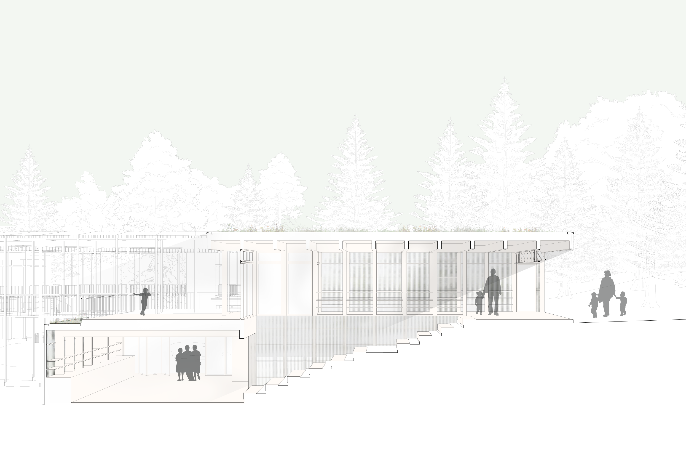
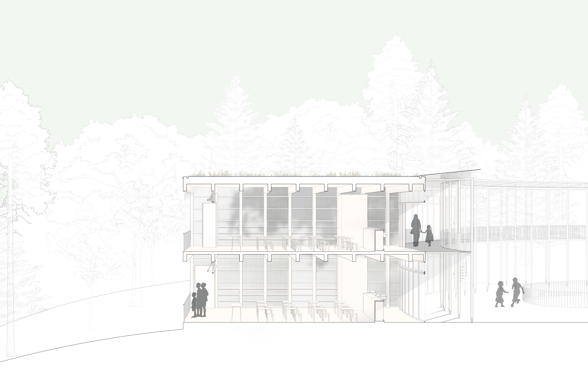
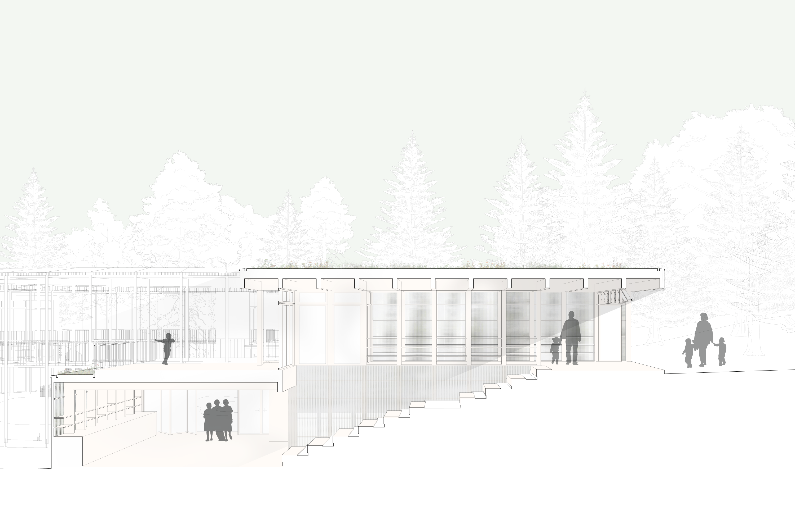
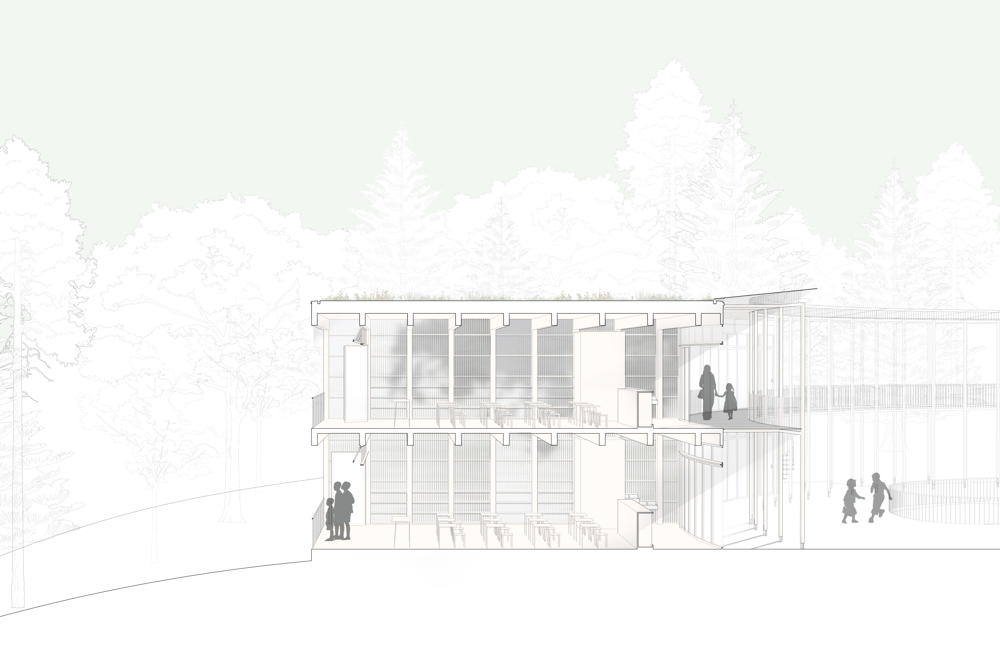

Forest Clearing School
An open air elementary school for the Covid-19 pandemic.
The Forest Clearing School is an elementary school designed to accommodate in-person classes during the Coronavirus pandemic. It sits in a clearing at the edge of the Ravenna Ravine, and through careful placement, preserves all existing trees and paths on the site. To minimize the spread of the virus, classes are held in small open-air buildings.
The structure is delicate and lightweight, permeable to the sounds and smells of the forest. Beyond a temporary solution for the pandemic, this project proposes a minimal but experientially rich alternative to the unsustainable comfort of modern construction.

 


